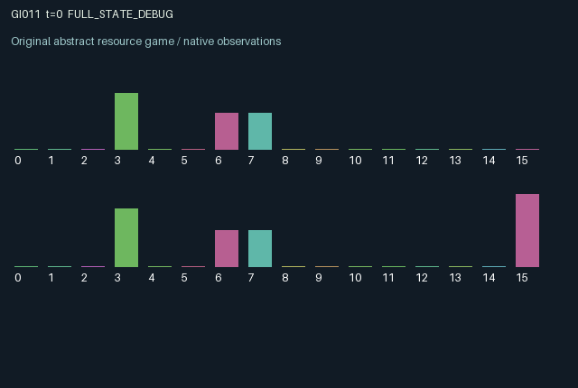

GI011 / LEGACY_ARRAY
astra-d2-00011: private sampling and delayed settlement of weighted reports
2 agents5 actions16 observation columns32 original horizonRuntime: PASS
Release verification episode
Untrained uniform legal actions. Actual JAX state sampled along the full original episode; full-state debug camera. No human performance or learning claim.

Run this game
crucibles play --game 11
Start Python locally, then open the address printed by the terminal. Installation, multiplayer, takeover and keyboard controls →
Objective, rewards & ending
Exact task contract
{
"objective": "Accumulate original per-agent rewards under the interaction rules in mechanism.md.",
"natural_termination": "No early terminal; original t >= 32 horizon.",
"exact_transition_and_reward_source": "def raw_step(self, key, state, actions):\n keys = jax.random.split(key, 2)\n inspected = actions == 1\n published = (actions == 2) | (actions == 3)\n completed = state[\"pending_age\"] == 1\n correct_choice = state[\"pending_choice\"] == state[\"pending_truth\"]\n settlement = jnp.where(completed, jnp.where(correct_choice, 1.0, -1.0), 0.0)\n credit_correct = state[\"pending_claim\"] == state[\"pending_truth\"]\n adjustment = jnp.where(credit_correct, 0.12, -0.16)\n weight = jnp.clip(\n state[\"weight\"]\n + (completed & state[\"pending_active\"]).astype(jnp.float32) * adjustment,\n 0.25,\n 1.0,\n )\n active = state[\"claim\"] >= 0\n signed = 2.0 * state[\"claim\"].astype(jnp.float32) - 1.0\n public_score = jnp.sum(state[\"weight\"] * signed * active.astype(jnp.float32))\n launched = (state[\"pending_age\"] == 0) & jnp.any(actions == 4)\n choice = (public_score > 0.0).astype(jnp.int32)\n pending_age = jnp.where(launched, 2, jnp.maximum(state[\"pending_age\"] - 1, 0)).astype(jnp.int32)\n pending_choice = jnp.where(launched, choice, state[\"pending_choice\"]).astype(jnp.int32)\n pending_truth = jnp.where(launched, state[\"truth\"], state[\"pending_truth\"]).astype(jnp.int32)\n pending_claim = jnp.where(launched, state[\"claim\"], state[\"pending_claim\"]).astype(jnp.int32)\n pending_active = jnp.where(launched, active, state[\"pending_active\"]).astype(jnp.bool_)\n changed = completed & jax.random.bernoulli(keys[0], p=0.25)\n truth = jnp.where(changed, 1 - state[\"truth\"], state[\"truth\"]).astype(jnp.int32)\n sample_correct = jax.random.uniform(keys[1], (2,), dtype=jnp.float32) < state[\"accuracy\"]\n sample = jnp.where(sample_correct, truth, 1 - truth).astype(jnp.int32)\n signal = jnp.where(inspected, sample, state[\"signal\"]).astype(jnp.int32)\n signal_age = jnp.where(\n inspected,\n 0,\n jnp.minimum(state[\"signal_age\"] + 1, 32),\n ).astype(jnp.int32)\n claim = jnp.where(published, actions - 2, state[\"claim\"]).astype(jnp.int32)\n rewards = (\n jnp.full((2,), 0.75 * settlement, dtype=jnp.float32)\n - 0.03 * inspected.astype(jnp.float32)\n - 0.01 * published.astype(jnp.float32)\n - 0.02 * (launched & (actions == 4)).astype(jnp.float32)\n ).astype(jnp.float32)\n next_state = {\n \"t\": state[\"t\"] + jnp.array(1, dtype=jnp.int32),\n \"truth\": truth,\n \"accuracy\": state[\"accuracy\"],\n \"signal\": signal,\n \"signal_age\": signal_age,\n \"claim\": claim,\n \"weight\": weight.astype(jnp.float32),\n \"pending_age\": pending_age,\n \"pending_choice\": pending_choice,\n \"pending_truth\": pending_truth,\n \"pending_claim\": pending_claim,\n \"pending_active\": pending_active,\n \"last_truth\": jnp.where(completed, state[\"pending_truth\"], state[\"last_truth\"]).astype(jnp.int32),\n \"last_success\": jnp.where(completed, settlement, state[\"last_success\"]).astype(jnp.float32),\n \"project_count\": state[\"project_count\"] + launched.astype(jnp.int32),\n }\n done_all = next_state[\"t\"] >= 32\n dones = jnp.full((2,), done_all, dtype=jnp.bool_)\n info = {\"done_all\": done_all, \"legal_mask\": self.legal_actions(next_state)}\n return self.observe(next_state), next_state, rewards, dones, info"
}Declared per-step reward bounds: -1.0 to 1.0. Observability: source_defined.
Rules
Original mechanism document (historical status wording retained)
# astra-d2-00011: private sampling and delayed settlement of weighted reports This is an original, parentless source proposal. It has not been executed or validated by the author. It is related to generic crowdsourced prediction, reputation-weighted evidence fusion, and delayed verification. It does not claim arbitrary-program nonisomorphism, mechanism eligibility, compilation success, or learning effectiveness. ## Persistent causal structure There is a hidden binary regime and two private noisy sampling channels. Agents maintain public binary reports and public report weights. A project chooses a binary alternative from the weighted sum of the currently published reports. Any agent can launch when no project is pending; a positive sum selects 1 and a zero or negative sum selects 0. Actions are 0 wait, 1 inspect privately, 2 publish report 0, 3 publish report 1, and 4 launch. Publishing replaces one's report. Inspection refreshes only one's private signal; publication is a separate action. A launch snapshots the pre-step reports, weights' resulting choice, and hidden regime. A report published concurrently cannot affect that launch. Only one project can be pending. Its clock starts at two, and it settles on the second subsequent call after launch. At settlement, both agents receive the same signed project outcome. The reports locked at launch gain 0.12 weight when correct and lose 0.16 when wrong, clipped to [0.25, 1]. Agents without a report at launch have no weight update. Editing a report after launch cannot rewrite its locked verification record. After each settlement the hidden regime flips with probability 0.25, using only the supplied step key. The public verified outcome therefore refers to the just-completed project's regime and need not reveal the new regime. Inspection in that step samples the new current regime. Reports and report weights persist across these changes, so formerly successful evidence can become stale. ## Information and incentives Each agent sees its own signal, its age, and its own channel accuracy. The other signal, the other channel accuracy, the current hidden regime, and the pending project's stored regime are absent from observations. Reports, weights, project clock and chosen alternative, the most recently verified old regime, and the last project outcome are public. Each agent also observes its own locked report. A completed correct project pays +0.75 to both agents and an incorrect project pays -0.75. Inspection costs 0.03, publication costs 0.01, and an effective launch costs each launching agent 0.02. With one action per agent, rewards lie in [-0.78, 0.75]. All actions remain legal. A launch action during a pending project has no effect or launch cost. Either agent can change the shared weighted evidence, trigger a shared commitment, and incur delayed weight changes that alter the influence of later reports. Inspection and publication costs permit free-riding even though project rewards are shared. ## Observation columns 0 elapsed time / 32; 1 own private signal; 2 own signal age / 32; 3 own channel accuracy; 4 own report; 5 other report; 6 own weight; 7 other weight; 8 weighted public score / 2; 9 pending clock / 2; 10 pending choice; 11 most recently verified regime; 12 last signed project outcome; 13 number of launches / 32; 14 own report locked in the pending project; 15 agent index. Reports, the pending choice, the last verified regime, and the locked report use 0 for absent, 0.5 for value 0, and 1 for value 1. Initially there is no report, project, or verified outcome, and the last signed outcome is zero. The own-signal column is directly binary. ## Scope and possible failure modes The shared payoff may favor truthful coordination but does not guarantee active sampling, efficient launch timing, or useful report weighting. Persistent weights can amplify stale reports, and the tie rule can favor one alternative. Pending projects are retained at termination without forced settlement. Trusted validation and any empirical conclusions remain outside this authoring step.
Commands
0Wait
1Inspect private signal
2Publish claim 0
3Publish claim 1
4Launch settlement
Roles & abilities
agent_0 Original legacy agent; see mechanism and source
agent_1 Original legacy agent; see mechanism and source
Observation permissions
Training receives only the original observation rows. Role cameras use declared visibility; debug cameras are explicitly marked. Local benchmark records log debug exposure and role takeover history.
Exact observation layout
[
{
"slice": [
0,
16
],
"visibility": "exact original observe() below",
"source_code": "def observe(self, state):\n active = state[\"claim\"] >= 0\n signed = 2.0 * state[\"claim\"].astype(jnp.float32) - 1.0\n public_score = jnp.sum(state[\"weight\"] * signed * active.astype(jnp.float32))\n visible_choice = jnp.where(state[\"pending_age\"] > 0, state[\"pending_choice\"], -1)\n visible_locked_claim = jnp.where(state[\"pending_age\"] > 0, state[\"pending_claim\"], -1)\n obs = jnp.zeros((2, 16), dtype=jnp.float32)\n obs = obs.at[:, 0].set(state[\"t\"].astype(jnp.float32) / 32.0)\n obs = obs.at[:, 1].set(state[\"signal\"].astype(jnp.float32))\n obs = obs.at[:, 2].set(state[\"signal_age\"].astype(jnp.float32) / 32.0)\n obs = obs.at[:, 3].set(state[\"accuracy\"])\n obs = obs.at[:, 4].set((state[\"claim\"].astype(jnp.float32) + 1.0) / 2.0)\n obs = obs.at[:, 5].set((jnp.roll(state[\"claim\"], 1).astype(jnp.float32) + 1.0) / 2.0)\n obs = obs.at[:, 6].set(state[\"weight\"])\n obs = obs.at[:, 7].set(jnp.roll(state[\"weight\"], 1))\n obs = obs.at[:, 8].set(public_score / 2.0)\n obs = obs.at[:, 9].set(state[\"pending_age\"].astype(jnp.float32) / 2.0)\n obs = obs.at[:, 10].set((visible_choice.astype(jnp.float32) + 1.0) / 2.0)\n obs = obs.at[:, 11].set((state[\"last_truth\"].astype(jnp.float32) + 1.0) / 2.0)\n obs = obs.at[:, 12].set(state[\"last_success\"])\n obs = obs.at[:, 13].set(state[\"project_count\"].astype(jnp.float32) / 32.0)\n obs = obs.at[:, 14].set((visible_locked_claim.astype(jnp.float32) + 1.0) / 2.0)\n obs = obs.at[:, 15].set(jnp.arange(2, dtype=jnp.float32))\n return obs"
}
]Entity visibility & attributes
[]
Actual verification & provenance
Per-game execution receipt
{
"game": "gi011",
"status": "PASS",
"verification_revision": 2,
"source_sha256": "a6e79656049b70a75d18043726cfde8342f643bc19130bed1f8687f60bf192c8",
"seed": 20261101,
"runtime": {
"jax": "0.4.38",
"numpy": "1.26.4",
"devices": [
"TFRT_CPU_0"
]
},
"dimensions": {
"num_agents": 2,
"observation_size": 16,
"num_actions": 5,
"max_steps": 32
},
"checks": {
"eager_reset": {
"status": "PASS",
"seconds": 1.5333759784698486
},
"observation_spaces_legal_masks": {
"status": "PASS",
"seconds": 0.16769194602966309
},
"eager_step": {
"status": "PASS",
"seconds": 0.8184354305267334
},
"jit_reset": {
"status": "PASS",
"seconds": 0.4845607280731201
},
"jit_step": {
"status": "PASS",
"seconds": 0.4902348518371582
},
"eager_jit_integer_parity_float_measurement": {
"status": "PASS",
"seconds": 0.0010004043579101562
},
"jit_vmap_reset": {
"status": "PASS",
"seconds": 0.5910274982452393
},
"jit_vmap_step": {
"status": "PASS",
"seconds": 0.45221781730651855
},
"outer_autoreset_api": {
"status": "PASS",
"seconds": 0.8471121788024902
},
"full_original_horizon_episode_and_render": {
"status": "PASS",
"seconds": 1.0393126010894775
}
},
"human_scores": null,
"browser_controls": "PENDING",
"failures": [],
"elapsed_seconds": 6.964894771575928,
"float_parity_max_abs": 0.0,
"numerical_parity": "EXACT",
"raw_terminal_absorbing": "NOT_PART_OF_ORIGINAL_LEGACY_CONTRACT",
"terminal_outer_reset": "PASS",
"episode_steps": 32,
"scripted_random_returns": [
-2.5899999272078276,
-2.599999936297536
],
"terminal": true,
"demo_information": "FULL_STATE_DEBUG",
"demo_frames": 33,
"render_roles_checked": 2
}Chromium control verification
{
"game": "gi011",
"status": "PASS",
"human_scores": null,
"engineering": true,
"checks": [
"catalog_selected_and_real_native_reset",
"dom_queue_and_native_step",
"second_participant_ownership_and_native_joint_step",
"all_roles_individually_controllable_no_role_cap",
"explicit_debug_camera",
"release_to_pure_ai_without_reset",
"close_session_preserves_log"
],
"ui_sha256": "96243f9de144b80b5e20a114330e2206bdcd58d3efc9c6f13bbc08b95cacc14d",
"keyboard": "NO_LEGAL_CARDINAL_COMMAND_FOR_ROLE0_AT_RESET",
"seconds": 4.125282287597656
}Original identity and file hashes
{
"id": 11,
"key": "gi011",
"title": "astra-d2-00011: private sampling and delayed settlement of weighted reports",
"summary": "",
"tags": [],
"family": "legacy_array",
"dimensions": {
"num_agents": 2,
"observation_size": 16,
"num_actions": 5,
"max_steps": 32
},
"source_sha256": "a6e79656049b70a75d18043726cfde8342f643bc19130bed1f8687f60bf192c8",
"manifest_sha256": "be491882b31644bb0fcc3cd72515e086424c9b6441128eae1e70bfac7341f7ae",
"files": [
{
"file": "candidate.py",
"sha256": "a6e79656049b70a75d18043726cfde8342f643bc19130bed1f8687f60bf192c8",
"bytes": 6647,
"origin": "work/exp_2/astra_generation/discovery_v2/initial/candidate_00011/attempt_00/candidate.py"
},
{
"file": "mechanism.md",
"sha256": "d9432972d8962488b627d2fe917df0d7e773907bec241d2ae643c3ca9589e568",
"bytes": 4098,
"origin": "work/exp_2/astra_generation/discovery_v2/initial/candidate_00011/attempt_00/mechanism.md"
}
],
"original_status": "LEGACY_SOURCE",
"original_saved_replay": false,
"release_validation": "PASS",
"human_scores": null,
"browser_validation": "PASS"
}